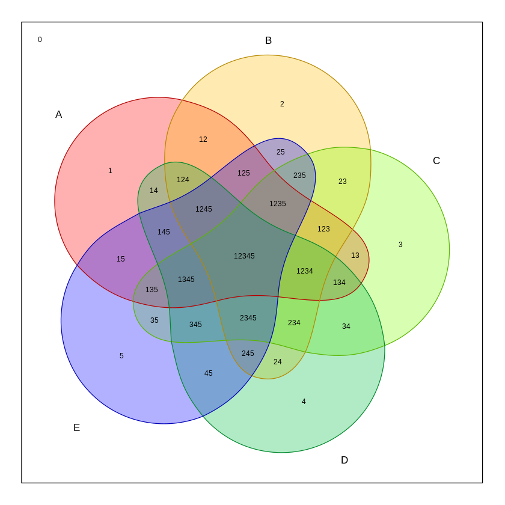

ベン図
🪑 ベン図
ベン図(Venn diagram)は、複数の集合の関係を視覚的に表現するための図です。1880年頃にイギリスの数学者ジョン・ベン (John Venn, 1834–1923) によって有名となりました。 以下では、2つから7つの集合のベン図を示します。なお、図は統計ソフトRのvennライブラリーを用いて作成しています。 統計ソフトRに関する詳細は統計分析フリーソフト「R」のマニュアルを参照してください。
2つの集合のベン図
このベン図は、2つの集合（赤と青）を表しています。どの集合に属しているかに応じて、長方形内を2✕2=4個の領域に分割しています。詳しくは以下のように要素が分布しています：
- 赤のみ: 1
- 青のみ: 2
- 赤と青の交わり: 12
3つの集合のベン図
このベン図は、3つの集合（赤、緑、青）を表しています。 どの集合に属しているかに応じて、長方形内を2✕2✕2=8個の領域に分割しています。詳しくは以下のように要素が分布しています：
- 赤のみ: 1
- 緑のみ: 2
- 青のみ: 3
- 赤と緑の交わり: 12
- 緑と青の交わり: 23
- 赤と青の交わり: 13
- 3つの集合の交わり: 123
4つの集合のベン図
このベン図は、4つの集合（赤、黄、緑、青）を表しています。どの集合に属しているかに応じて、長方形内を2✕2✕2✕2=16個の領域に分割しています。詳しくは以下のように要素が分布しています：
- 赤のみ: 1
- 黄のみ: 2
- 緑のみ: 3
- 青のみ: 4
- 赤と黄の交わり: 12
- 黄と緑の交わり: 23
- 緑と青の交わり: 34
- 青と赤の交わり: 14
- 2つ以上の交わり: 123, 124, 134, 234, 1234 など
5つの集合のベン図
このベン図は、5つの集合（赤、オレンジ、薄緑、濃緑、青）を表しています。どの集合に属しているかに応じて、長方形内を2✕2✕2✕2✕2=32個の領域に分割しています。 また、各集合を表す図形は、円ではありません。ここまでくると、視覚的に見てもよくわからなくなってきています。詳しくは以下のように要素が分布しています：
- 赤のみ: 1
- オレンジのみ: 2
- 薄緑のみ: 3
- 濃緑のみ: 4
- 青のみ: 5
- 2つ以上の交わり: 12, 13, 14, 15, 23, 24, 25, 34, 35, 45 など
- 3つ以上の交わり: 123, 124, 125, 134, 135, 145, 234, 235, 245, 345 など
- 4つ以上の交わり: 1234, 1235, 1245, 1345, 2345 など
- 5つの集合の交わり: 12345
6つの集合のベン図
このベン図は、6つの集合を表しています。長方形内を2✕2✕2✕2✕2✕2=64個の領域に分割しています。また、各集合を表す図形は、円ではありません。ここまでくると、視覚的に見てもよくわからなくなってきています。
7つの集合のベン図
このベン図は、7つの集合を表しています。長方形内を2✕2✕2✕2✕2✕2✕2=128個の領域に分割しています。また、各集合を表す図形は、円ではありません。ここまでくると、視覚的に見てもよくわからなくなってきています。 このWEBページでは、各領域にマウスを乗せると、どの集合に属するのか視覚的に分かるようになっています。が、それでも複雑でかなりわかりにくいです。